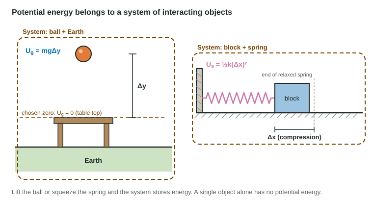

Potential Energy
Potential energy is stored in the configuration of interacting objects and belongs to the system.
Part 1 · Hook
Why this matters
Part 2 · Before you start
What this builds on
Part 3 · Prerequisite check
Quick check before you start
1. Work done by a force along a displacement d with angle θ is
- F d cos θ
- F d sin θ
- F/d
- F d²
Show the answer
W = F d cos θ.
- Correct: F d cos θ:
- F d sin θ:
- F/d:
- F d²:
2. Hooke's law gives the size of an ideal spring's force as
- kΔx
- ½kΔx²
- k/Δx
- mg
Show the answer
F_s = kΔx, proportional to the stretch or compression.
- Correct: kΔx:
- ½kΔx²:
- k/Δx:
- mg:
3. Newton's law of universal gravitation gives the force between two masses as
- Gm₁m₂/r²
- Gm₁m₂/r
- m₁m₂/(Gr²)
- Gm₁m₂r²
Show the answer
F_g = Gm₁m₂/r².
- Correct: Gm₁m₂/r²:
- Gm₁m₂/r:
- m₁m₂/(Gr²):
- Gm₁m₂r²:
Part 4 · See it
See it first

Part 5 · Step by step
How it works, step by step
- Two objects interact through a conservative force (gravity, an ideal spring)the work the force does depends only on where the objects start and end
- The work depends only on the configurationthe system can store energy in its configuration: potential energy, with ΔU = −W_conservative
- The objects are pulled apart against gravity or a spring is squeezedthe system's potential energy increases: ΔU_g = mgΔy, U_s = ½k(Δx)²
- Only changes in U appear in physicsthe zero of potential energy can be placed wherever is convenient
- A force does more work on a longer path, like kinetic frictionit is nonconservative and has no potential energy
Part 6 · Key ideas
Key ideas
- Potential energy is energy stored in the configuration of a system of interacting objects. One object alone has none.
- Near Earth: ΔU_g = mgΔy. For an ideal spring: U_s = ½k(Δx)², with Δx measured from the relaxed length.
- A conservative force does work that depends only on the start and end positions; for it, W = −ΔU. Kinetic friction is nonconservative.
- The zero of potential energy is a choice. Values change with the choice; changes do not.
- Far from a planet: U_G = −Gm₁m₂/r, zero at infinite separation and negative everywhere else.
Part 7 · Misconception
A common mistake
The wrong idea: The book on the shelf has 29 J of potential energy.
What actually happens: The book-Earth system has 29 J of gravitational potential energy (with the floor as zero). The energy is stored in the interaction, so it belongs to the system.
Part 8 · Check yourself
Check yourself
Exam-style questions. Anything you miss goes into your review queue.
Diagram
A book, a shelf and a table
Use g = 9.8 m/s². Heights are measured to the bottom of the book.
1. Take the floor as the zero of gravitational potential energy. What is the gravitational potential energy of the book-Earth system with the book on the shelf? Give the value and its unit.
Type a number and its unit.
Show the answer
U_g = mgΔy = (2.0 kg)(9.8 m/s²)(1.50 m) = 29 J, measured from the floor.
- Answer: 29 J
2. Now take the table top as the zero. What is the gravitational potential energy of the book-Earth system with the book on the shelf, in joules?
Type a number in J.
Show the answer
Δy = 1.50 m − 0.80 m = 0.70 m above the table top, so U_g = (2.0 kg)(9.8 m/s²)(0.70 m) = 14 J.
- Answer: 14 J
3. The book is moved from the shelf to the table top. How does the change in the system's gravitational potential energy depend on the choice of zero?
- It is about −14 J for either choice of zero
- It is −29 J with the floor as zero and −14 J with the table as zero
- It is zero with the table as zero, because the book ends at zero
- It is +14 J, because the book moves to a new height
Show the answer
ΔU_g = mgΔy = (2.0 kg)(9.8 m/s²)(−0.70 m) = −14 J. Any zero gives the same change, which is why the choice of zero is free.
- Correct: It is about −14 J for either choice of zero: Right: the change depends only on the change in height, −0.70 m.
- It is −29 J with the floor as zero and −14 J with the table as zero: These are values of U_g on the shelf, not changes. A change subtracts two values measured from the same zero.
- It is zero with the table as zero, because the book ends at zero: Ending at zero does not make the change zero; it started at +14 J.
- It is +14 J, because the book moves to a new height: The book moves down, so U_g decreases: the change is negative.
4. A student writes "the book has 29 J of potential energy." Which correction is best?
- The potential energy belongs to the shelf, which holds the book up
- The potential energy belongs to the book-Earth system, not to the book alone
- The value should be 29 N, because it comes from the weight
- The book has 29 J of kinetic energy instead
Show the answer
Potential energy is energy of a system of interacting objects. The gravitational potential energy here belongs to the book-Earth system.
- The potential energy belongs to the shelf, which holds the book up: The shelf's support is a contact force, not the interaction that stores gravitational potential energy.
- Correct: The potential energy belongs to the book-Earth system, not to the book alone: Right: it comes from the interaction of the book and Earth.
- The value should be 29 N, because it comes from the weight: Weight is a force in newtons; energy is in joules, a force times a distance.
- The book has 29 J of kinetic energy instead: The book is at rest on the shelf, so it has no kinetic energy.
Data table
Energy stored in a compressed spring
A student compresses an ideal spring by different amounts and calculates the elastic potential energy of the block-spring system for each.
| Compression Δx (m) | U_s (J) |
|---|---|
| 0.020 | 0.10 |
| 0.040 | 0.40 |
| 0.060 | 0.90 |
| 0.080 | 1.6 |
5. When the compression doubles from 0.020 m to 0.040 m, the stored energy
- doubles
- stays the same, because the spring is the same
- increases by 0.10 J
- becomes 4 times as large
Show the answer
U_s = ½k(Δx)², so doubling Δx multiplies U_s by 4.
- doubles: That would be true if U_s were proportional to Δx. The table shows a factor of 4.
- stays the same, because the spring is the same: The spring constant stays the same, but the energy depends on the compression.
- increases by 0.10 J: It increases by 0.30 J, from 0.10 J to 0.40 J.
- Correct: becomes 4 times as large: Right: U_s ∝ (Δx)², and 2² = 4; the table shows 0.10 J to 0.40 J.
6. Use the 0.080 m row to find the spring constant, in N/m.
Type a number in N/m.
Show the answer
k = 2U_s/(Δx)² = 2(1.6 J)/(0.080 m)² = 5.0 × 10² N/m.
- Answer: 500 N/m
Part 9 · Summary
Summary
Part 10 · Up next
What comes next
Part 11 · Connections